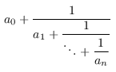

| Safe Haskell | None |
|---|
Quipper.Algorithms.CL.Auxiliary
Contents
Description
This module defines general-purpose functions not specific to the Class Number algorithm, but required by it.
Synopsis
- assert :: Bool -> String -> a -> a
- assertM :: Monad m => Bool -> String -> m ()
- sequence_until :: Monad m => (a -> Bool) -> [m a] -> m (Maybe a)
- all_eq :: Eq a => [a] -> Bool
- while :: (a -> Bool) -> (a -> a) -> a -> a
- bounded_while :: Integral int => (a -> Bool) -> int -> (a -> a) -> a -> a
- bounded_iterate :: Integral int => int -> (a -> a) -> a -> [a]
- primes :: Integral a => [a]
- primes_to :: Integral a => a -> [a]
- is_square_free :: Integral a => a -> Bool
- jacobi_symbol :: (Integral a, Num b) => a -> a -> b
- mod_with_max :: Integral a => a -> a -> a -> a
- divchk :: (Show a, Integral a) => a -> a -> a
- extended_euclid :: Integral a => a -> a -> (a, a, a)
- divides :: Integral a => a -> a -> Bool
- is_int :: (RealFrac a, Eq a) => a -> Bool
- continued_list :: Integral int => int -> int -> [int]
- convergents :: (Integral int, Fractional a) => [int] -> [a]
- blackbox :: (QData qa, QData qb) => String -> qb -> qa -> Circ (qa, qb)
- arithbox :: (QCData qa, QCData qb, QCurry qa_qb qa qb) => String -> qa_qb -> qa_qb
- q_ext_euclid :: QDInt -> QDInt -> Circ (QDInt, QDInt, QDInt, QDInt, QDInt)
- q_add :: QDInt -> QDInt -> Circ (QDInt, QDInt, QDInt)
- q_mult :: (QCData qa, QNum qa) => qa -> qa -> Circ (qa, qa, qa)
- q_div_exact :: QDInt -> QDInt -> Circ (QDInt, QDInt, QDInt)
- q_add_in_place :: QDInt -> QDInt -> Circ (QDInt, QDInt)
- q_add_param_in_place :: IntM -> QDInt -> Circ QDInt
- q_div :: QDInt -> QDInt -> Circ (QDInt, QDInt, QDInt)
- q_mult_param :: IntM -> QDInt -> Circ (QDInt, QDInt)
- q_mod_unsigned :: QDInt -> QDInt -> Circ (QDInt, QDInt, QDInt)
- q_sub_in_place :: QDInt -> QDInt -> Circ (QDInt, QDInt)
- q_increment :: QDInt -> Circ QDInt
- fprealq_of_QDInt_with_shape :: FPRealQ -> QDInt -> Circ (QDInt, FPRealQ)
- q_div2 :: QDInt -> Circ QDInt
- q_square :: QDInt -> Circ (QDInt, QDInt)
- q_gt_param :: QDInt -> IntM -> Circ (QDInt, Qubit)
- q_ge_param :: QDInt -> IntM -> Circ (QDInt, Qubit)
- q_mod_semi_signed :: QDInt -> QDInt -> Circ (QDInt, QDInt, QDInt)
- q_mod_with_max :: QDInt -> QDInt -> QDInt -> Circ (QDInt, QDInt, QDInt, QDInt)
- q_mod_2times_buggy :: QDInt -> QDInt -> Circ (QDInt, QDInt, QDInt)
- q_bounded_while_with_garbage :: (QData qa, QCData qb) => (qa -> Circ (qa, Qubit)) -> Int -> qa -> (qa -> Circ (qa, qb)) -> Circ (qa, qa)
- q_bounded_while :: QCData qa => (qa -> Circ (qa, Qubit)) -> Int -> qa -> (qa -> Circ qa) -> Circ (qa, qa)
- q_bounded_while_productive :: (QCData qa, QCData qb) => (qa -> Circ (qa, Qubit)) -> Int -> qa -> (qa -> Circ (qa, qb)) -> Circ (qa, qa, [qb])
- q_do_until :: QCData qa => Int -> qa -> (qa -> Circ (qa, Qubit)) -> Circ (qa, qa)
Classical functions
Control
assert :: Bool -> String -> a -> a Source #
Assert that a condition is true, otherwise throwing an error with a given error message, in a functional setting.
sequence_until :: Monad m => (a -> Bool) -> [m a] -> m (Maybe a) Source #
Given a list of monadic actions and a predicate on their results, do the actions in sequence until one produces a result satisfying the predicate; return this result.
while :: (a -> Bool) -> (a -> a) -> a -> a Source #
Apply a function to data while condition holds true. For example:
while (not . isReduced . fst) rho ideal
will apply the function rho to an ideal-with-distance while it is not yet reduced (until it is reduced).
bounded_while :: Integral int => (a -> Bool) -> int -> (a -> a) -> a -> a Source #
bounded_iterate :: Integral int => int -> (a -> a) -> a -> [a] Source #
A bounded version of Haskell iterate function that produces an infinite
list. This function produces a finite bounded list.
Mathematical functions
primes :: Integral a => [a] Source #
Generate primes using the Sieve of Eratosthenes. Straightforward implementation - when a prime is found, filter all of its multiples out of the already filtered list. This implementation may eventually blow out of stack, but it should grow with the number of primes, which seems to be O(log log n).
primes_to :: Integral a => a -> [a] Source #
Generate primes up to a given number. See implementation of primes for
details.
is_square_free :: Integral a => a -> Bool Source #
Check if a number is square-free (by brute force).
jacobi_symbol :: (Integral a, Num b) => a -> a -> b Source #
Compute the Jacobi symbol. The definition and algorithm description is taken from http://en.wikipedia.org/wiki/Jacobi_symbol.
mod_with_max :: Integral a => a -> a -> a -> a Source #
mod_with_max x y max
divchk :: (Show a, Integral a) => a -> a -> a Source #
Integer division with asserts making sure that the denominator indeed divides the numerator.
extended_euclid :: Integral a => a -> a -> (a, a, a) Source #
extended_euclid a b
continued_list :: Integral int => int -> int -> [int] Source #
Generate the list of integers describing the continued fraction of a given rational number. Since the number is rational, the expansion is finite.
Each rational number q is equal to a unique expression of the form

where n ≥ 0, a0 is an integer, a1, …, an are
positive integers, and an ≠ 1 unless n=0. This is called the
(short) continued fraction expansion of q. The function continued_list inputs
two integers num and denom, computes the continued fraction expansion of
q = num / denom, and returns the non-empty sequence
[a0, …, an].
convergents :: (Integral int, Fractional a) => [int] -> [a] Source #
Generate a list of convergents from a continued fraction (as described by the non-empty list of integers of that fraction).
Quantum functions
Generic blackboxing
blackbox :: (QData qa, QData qb) => String -> qb -> qa -> Circ (qa, qb) Source #
Unimplemented components need to be given as black boxes — like named gates, except their types may not just be an endomorphism; like subroutines, except with only a placeholder on the inside.
For this module, black boxes are only needed for classical functional routines, i.e. with type qa -> Circ (qa, qb)
Boxed imported arithmetic
To reduce the printed sizes of circuits, we box all imported arithmetic components.
arithbox :: (QCData qa, QCData qb, QCurry qa_qb qa qb) => String -> qa_qb -> qa_qb Source #
Like box, but prepends "Arith." to subroutine names,
as a crude form of namespace management.
q_ext_euclid :: QDInt -> QDInt -> Circ (QDInt, QDInt, QDInt, QDInt, QDInt) Source #
Boxed analogue of q_ext_euclid.
q_div_exact :: QDInt -> QDInt -> Circ (QDInt, QDInt, QDInt) Source #
Boxed analogue of q_div_exact.
q_add_in_place :: QDInt -> QDInt -> Circ (QDInt, QDInt) Source #
Boxed analogue of q_add_in_place.
q_add_param_in_place :: IntM -> QDInt -> Circ QDInt Source #
Boxed analogue of q_add_param_in_place.
q_mult_param :: IntM -> QDInt -> Circ (QDInt, QDInt) Source #
Boxed analogue of q_mult_param.
q_mod_unsigned :: QDInt -> QDInt -> Circ (QDInt, QDInt, QDInt) Source #
Boxed analogue of q_mod_unsigned.
q_sub_in_place :: QDInt -> QDInt -> Circ (QDInt, QDInt) Source #
Boxed analogue of q_sub_in_place.
q_increment :: QDInt -> Circ QDInt Source #
Boxed analogue of q_increment.
Other arithmetic functions
q_div2 :: QDInt -> Circ QDInt Source #
Divide a QDInt by 2, in place. (Behavior on odd integers: so far, not required.)
As this is not required on odd integers, we can assume that the least significant
bit is 0, and use an operation equivalent to a right rotate, instead of a right
shift. This can be achieved by changing the list indices within the QDInt, and not
a quantum operation, but this operation is *NOT* controllable.
q_square :: QDInt -> Circ (QDInt, QDInt) Source #
Square a QDInt. This is achieved by creating a copy of the input, using the
out of place multiplier, and then uncopying the input.
q_mod_semi_signed :: QDInt -> QDInt -> Circ (QDInt, QDInt, QDInt) Source #
q_mod_semi_signed x y
Note: not non-linear safe in x.
q_mod_with_max :: QDInt -> QDInt -> QDInt -> Circ (QDInt, QDInt, QDInt, QDInt) Source #
q_mod_with_max x y mmod_with_max.)
q_mod_2times_buggy :: QDInt -> QDInt -> Circ (QDInt, QDInt, QDInt) Source #
Obsolete function, retained for testing since it evokes a subtle bug in with_computed.
Looping combinators
q_bounded_while_with_garbage Source #
Arguments
| :: (QData qa, QCData qb) | |
| => (qa -> Circ (qa, Qubit)) | the conditional test on the data |
| -> Int | a bound on the number of times the loop can run |
| -> qa | the starting value |
| -> (qa -> Circ (qa, qb)) | the body of the loop |
| -> Circ (qa, qa) | the initial and final values, and the produced data |
Perform a bounded while loop, whose body may produce extra output.
Arguments
| :: QCData qa | |
| => (qa -> Circ (qa, Qubit)) | the conditional statement |
| -> Int | a bound on the number of times the loop can run |
| -> qa | the starting value |
| -> (qa -> Circ qa) | the body of the loop |
| -> Circ (qa, qa) | return the initial value, and the final post-loop value |
Perform a bounded-length while loop, with an endo-typed body.
Note: uses 2 * bound ancillas. Can this be avoided?
q_bounded_while_productive Source #
Arguments
| :: (QCData qa, QCData qb) | |
| => (qa -> Circ (qa, Qubit)) | the conditional test on the data |
| -> Int | a bound on the number of times the loop can run |
| -> qa | the starting value |
| -> (qa -> Circ (qa, qb)) | the body of the loop |
| -> Circ (qa, qa, [qb]) | the initial and final values, and the produced data |
Perform a bounded while loop, whose body may produce extra output.
Arguments
| :: QCData qa | |
| => Int | a bound on the number of times the loop can run |
| -> qa | the starting value |
| -> (qa -> Circ (qa, Qubit)) | the body of the loop, producing an input to the next iteration, plus a qubit to mark if we’re finished yet. |
| -> Circ (qa, qa) | return the initial and final values |
Perform a bounded “do_until” loop.